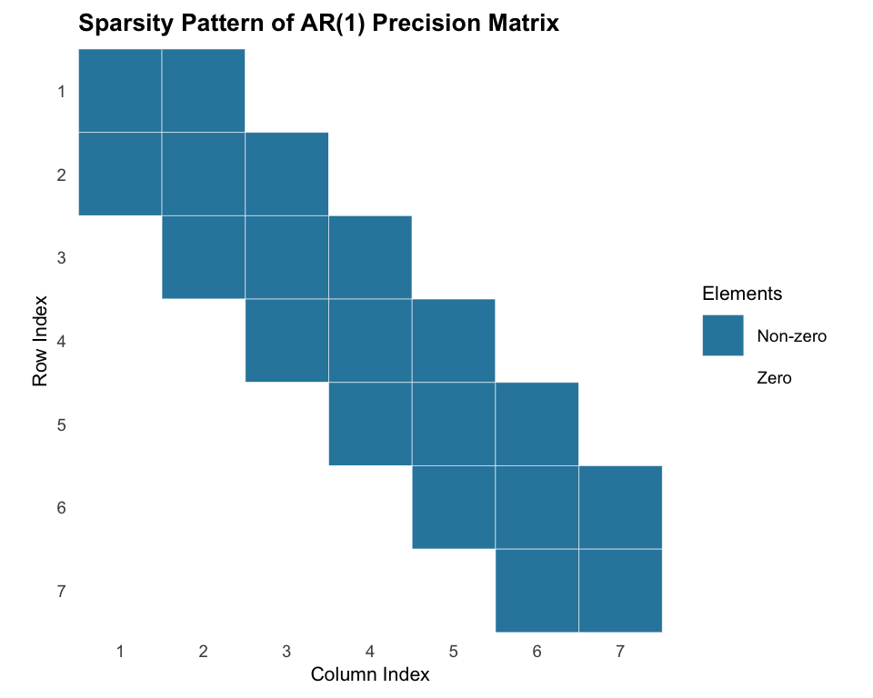
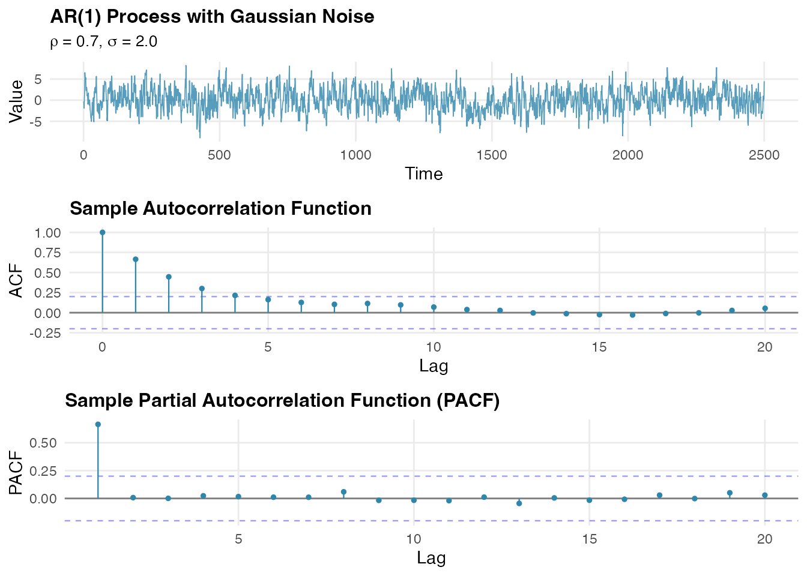
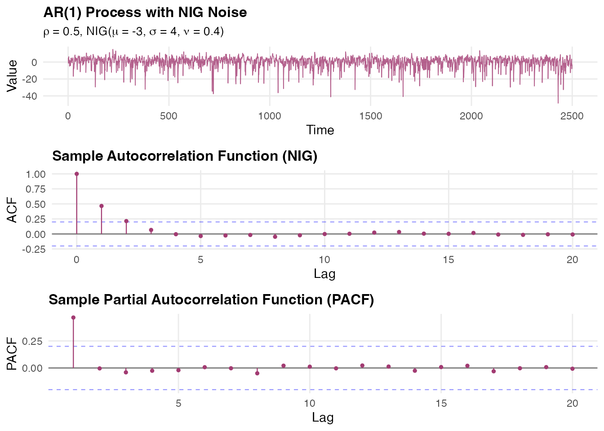
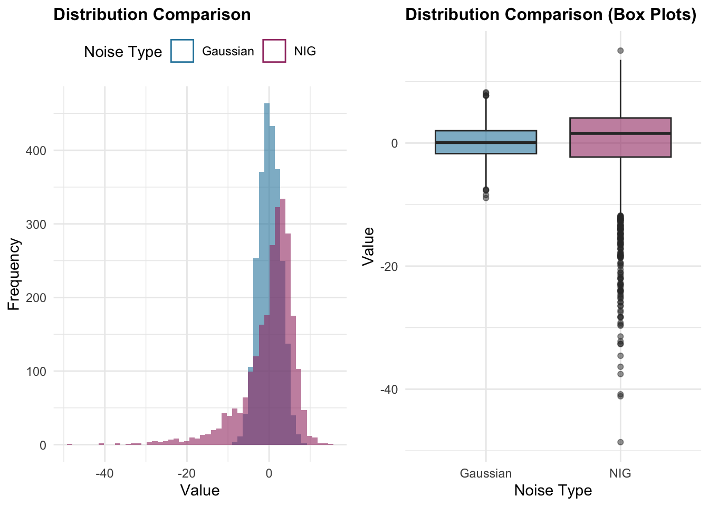
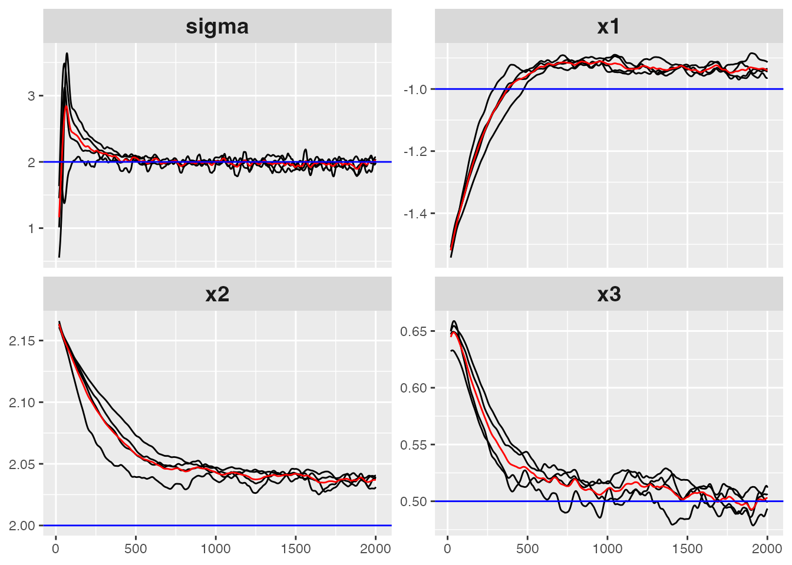
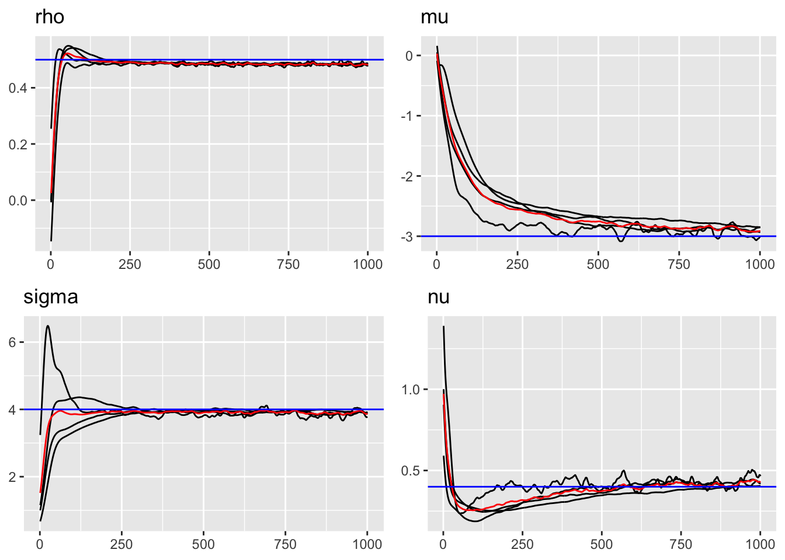
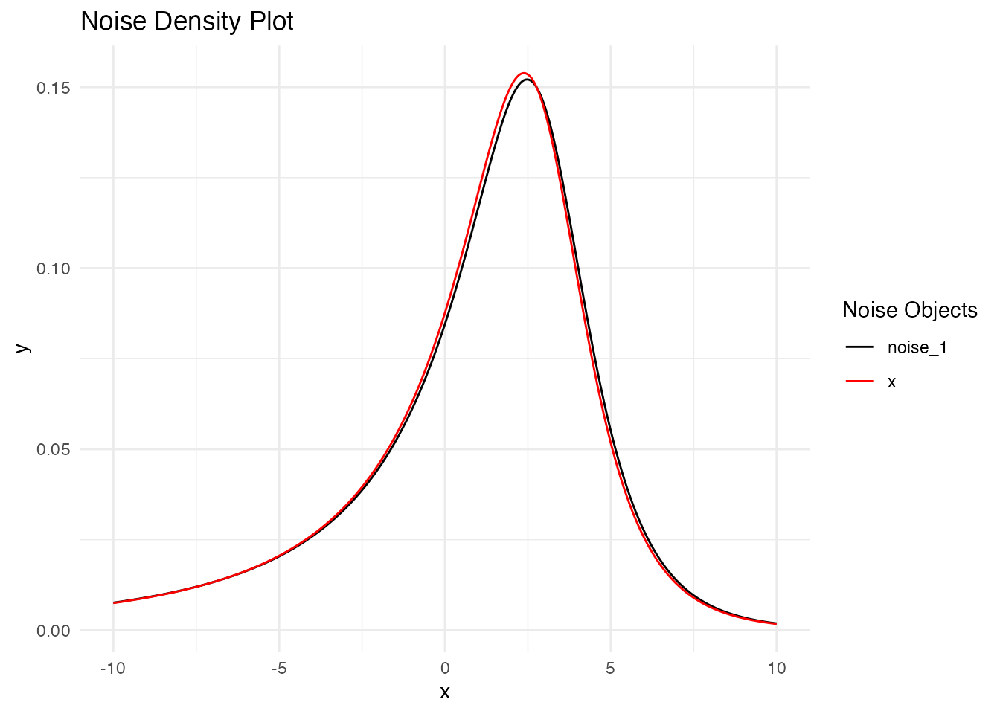
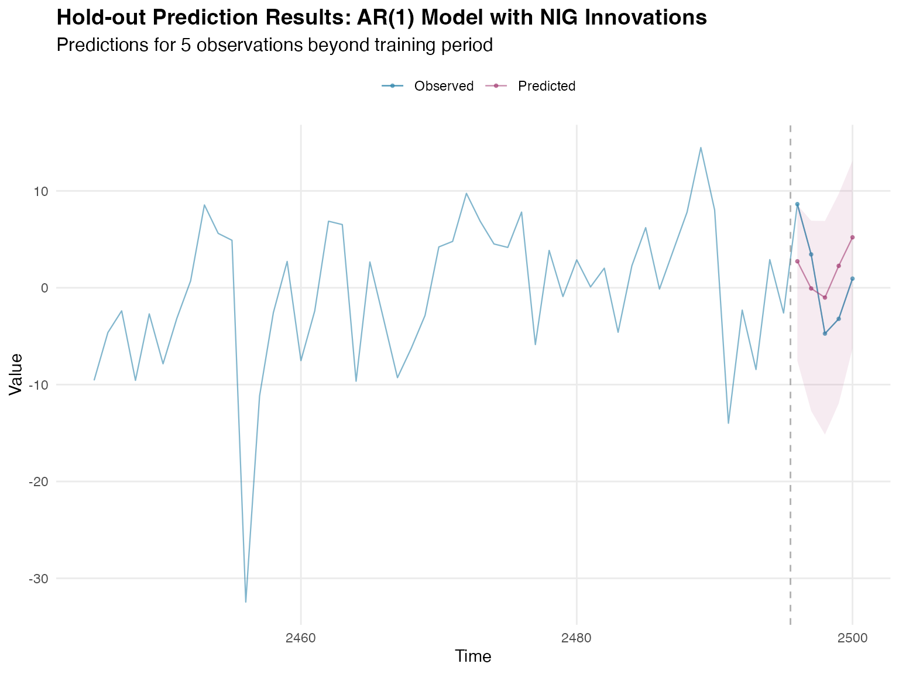
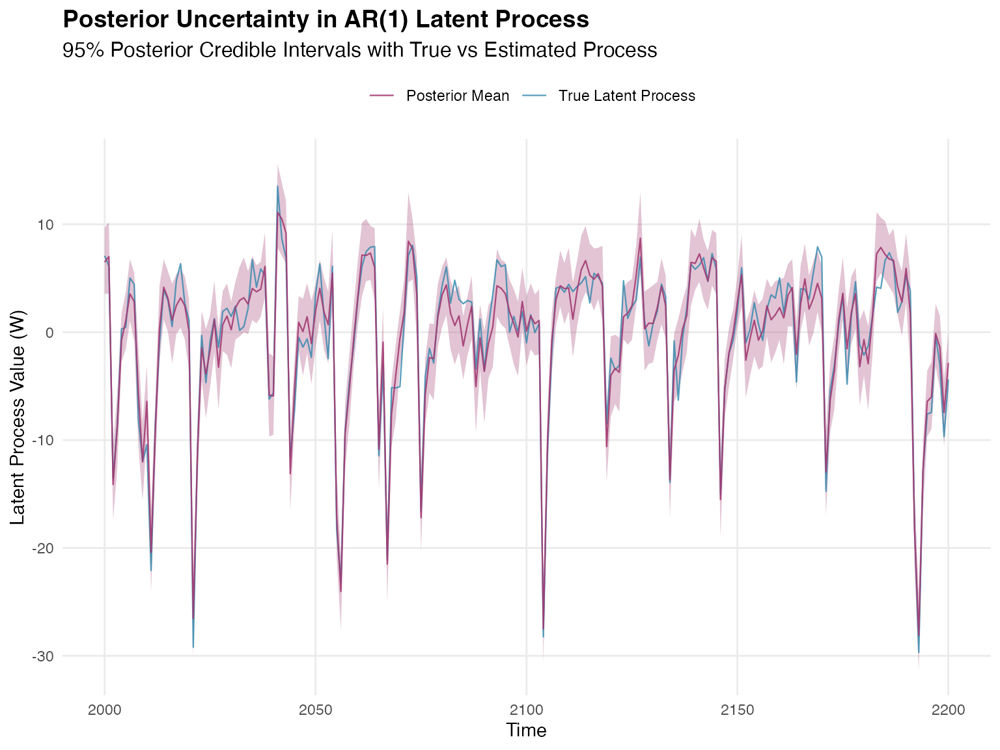

Introduction
Time series analysis is often used to model temporal dependencies in data, where observations at different points in time are correlated.
The autoregressive model of order 1 (AR(1)) provides
a simple but widely used temporal framework that is capable of
predicting a future value from the current value plus a random error
term. Most AR(1) implementations traditionally assume that random errors
follow a normal (Gaussian) distribution, and these implementations are
typically fitted using packages like forecast or
stats.
The ngme2 package extends traditional AR(1) models by
allowing for non-Gaussian noise distributions, particularly the Normal
Inverse Gaussian (NIG) distribution: a flexible distribution allowing
for skewness and heavy tails, which can capture the asymmetric and
heavy-tailed behavior commonly observed in real-world time series data.
The package also supports the Generalized Asymmetric Laplace (GAL)
distribution: a flexible distribution accommodating peakedness,
skewness, and heavy tails.
Additionally, ngme2 enables the use of AR(1) processes
as latent models within linear regression frameworks with mixed effects.
This capability allows researchers to model complex hierarchical data
structures where temporal dependencies exist at the latent level, while
simultaneously accounting for fixed effects and other random effects.
This integration makes it possible to capture both the temporal
correlation structure through the AR(1) latent process and the
heterogeneity across different groups or experimental units through
mixed effects modeling.
This vignette provides a comprehensive guide to implementing and
using AR(1) models within the ngme2 framework.
Model Specification
AR(1) Process Definition
An autoregressive model of order 1 (AR(1)) is a stochastic process where each observation depends linearly on the immediately preceding observation plus a random error term. The AR(1) process is mathematically defined as:
where:
- denotes a zero-mean distribution with variance (e.g., Gaussian, NIG, or GAL);
- is the autoregressive parameter with (stationarity condition);
- are independent and identically distributed innovation terms with variance ;
- is the total number of observations.
Note on Innovation Distributions: For non-Gaussian innovations, mean and variance do not fully specify the distribution, but are sufficient for the classical exposition of AR models:
- For NIG innovations: follows a Normal Inverse Gaussian distribution with additional parameters (location, scale, asymmetry, and tail heaviness), set to ensure zero mean and variance ;
- For GAL innovations: follows a Generalized Asymmetric Laplace distribution with extra parameters, also set for zero mean and variance .
Note on Markov Property: The AR(1) process exhibits the first-order Markov property, meaning that the conditional distribution of any observation given the entire past depends only on the immediate predecessor . Formally, for any :
This property emerges directly from the recursive structure combined with the independence of innovations . Since is independent of all past values and is completely determined by and , knowledge of the entire history provides no additional information beyond for predicting . This Markov structure is fundamental to the computational efficiency of AR(1) models, as it implies that the precision matrix has a sparse, banded structure that enables efficient numerical algorithms.
Note on Initial Condition: The scaling factor in the initial condition ensures that has the correct marginal variance for stationarity. Specifically, This guarantees that the initial variance matches the stationary distribution of the AR(1) process, regardless of the value of .
Properties
Stationarity Condition: The constraint ensures that the process is stationary, meaning its statistical properties remain constant over time.
Variance Structure: In the stationary distribution, all observations have the same marginal variance .
Autocorrelation Function: For a stationary AR(1) process, the autocorrelation function exhibits exponential decay: where is the lag. This characteristic pattern distinguishes AR(1) processes from other time series models.
Partial Autocorrelation Function: The partial autocorrelation function (PACF) for an AR(1) process has a distinctive pattern: This cutoff after lag 1 is a key diagnostic feature for identifying AR(1) processes in practice.
Noise Distributions: In ngme2, the
innovation terms
can follow either:
Gaussian distribution: Traditional approach with symmetric, light-tailed errors;
Normal Inverse Gaussian (NIG) distribution: Flexible distribution allowing for skewness and heavy tails;
Generalized Asymmetric Laplace (GAL) distribution: Flexible distribution accommodating peakedness, skewness, and heavy tails.
Irregular Time Grids: The ngme2 package
supports AR(1) processes on irregular time grids, allowing for gaps in
the time series. This is particularly useful for modeling data with
missing time points or irregular sampling intervals.
Matrix Representation
The AR(1) process can be expressed in matrix form as: where , , and is a matrix that encodes the AR(1) structure.
The matrix is:
Justification of Matrix Construction: The first row with ensures that has the correct marginal variance for stationarity. The subsequent rows implement the recursive relationship by rearranging to .
The matrix relates the correlated AR(1) process values to the independent noise terms . This structure allows us to express the precision matrix (inverse of the covariance matrix) of the AR(1) as $\mathbf{Q} = \mathbf{K}^T \mathbf{K}/\sigmaˆ2$, meaning that serves as a Cholesky-like factor of . Furthermore, the resulting precision matrix inherits the sparse structure from the Markov property of AR(1) processes, leading to significant computational advantages in terms of both memory usage and processing speed, particularly when dealing with long time series.
Precision Matrix
For the AR(1) process with the above matrix and error variance , the precision matrix is:
Interpretation: The precision matrix encodes the conditional independence structure of the AR(1) process. The tridiagonal structure (except for the first row/column) reflects the Markov property: each observation is conditionally independent of all others given its immediate neighbors.
Matrix Relationships Summary
- Matrix : Maps correlated AR(1) process to independent noise (innovation form)
- Precision matrix : Inverse of the covariance matrix
- Covariance matrix : Contains the covariances between all pairs of time points
This matrix formulation not only establishes a direct connection to
the precision matrix
by computing the innovations from the process values, but also
integrates seamlessly with other ngme2 components.
Factorizing the AR(1) process in this way, one gains both conceptual
clarity and simplified implementation, especially in high-dimensional
settings with sparse precision matrices. This approach is
computationally efficient and faster than traditional methods. This is
the general structure of the latent models supported by the
ngme2 package.
Implementation in ngme2
Basic Syntax
To specify an AR(1) model in ngme2, use the
f() function with the model=ar1() argument
within your model formula: f(time_index, model=ar1()). When
not specifying the noise argument in f(), the
process defaults to Gaussian noise. For simulation purposes, it is
important to define the sigma parameter in the
noise specification, as this controls the variance of the
innovations. For estimation, however, specifying sigma is
optional since the model will automatically estimate this parameter from
the observed data.
Basic Usage Example
When specifying the time grid, keep in mind that the AR(1) process in
ngme2 requires integer time indices, although these do not
need to be consecutive (gaps are allowed). This flexibility is
particularly useful for modeling time series with irregular observation
patterns or missing data points.
For illustration, we will create an AR(1) model using an irregular
time grid with integer years. This demonstrates how ngme2
handles non-consecutive time points:
library(ngme2)
#> This is ngme2 of version 0.9.3
#> - See our homepage: https://davidbolin.github.io/ngme2 for more details.
#>
#> Attaching package: 'ngme2'
#> The following object is masked from 'package:stats':
#>
#> ar
set.seed(16)
# Define time points with gaps (irregular spacing)
time_points <- c(2001, 2003, 2005, 2007)Observe that in ngme2, it is possible to have gaps in
the time grid, and the observed years can be provided in any order. For
example, in this case, data for 2002, 2004, and 2006 are missing. The
AR(1) model will still maintain the temporal dependence structure across
these gaps. Internally, ngme2 automatically constructs the
sorted, complete time grid (e.g., 2001, 2002, …, 2007) as needed for the
precision matrix, so the user does not need to handle this manually.
Consequently, the precision matrix will always have dimensions
determined by the complete time grid, while an observation matrix A is
used to map the observed time points to the corresponding points on the
complete grid.
Now we will specify the AR(1) model with a negative autocorrelation parameter, which creates an oscillating pattern in which high values tend to be followed by low values:
# Define AR(1) model with negative autocorrelation
ar1_model <- f(time_points,
model = ar1(rho = -0.5), # rho = -0.5 creates oscillating behavior
noise = noise_normal(sigma = 1.0) # Gaussian innovations with sigma = 1
)The ngme2 package constructs several important matrices
internally. We can examine the matrix
structure that relates the AR(1) process to the independent noise
terms:
# Examine the K matrix structure
K_matrix <- ar1_model$operator$K
print(K_matrix)
#> 7 x 7 sparse Matrix of class "dgCMatrix"
#>
#> [1,] 0.8660254 . . . . . .
#> [2,] 0.5000000 1.0 . . . . .
#> [3,] . 0.5 1.0 . . . .
#> [4,] . . 0.5 1.0 . . .
#> [5,] . . . 0.5 1.0 . .
#> [6,] . . . . 0.5 1.0 .
#> [7,] . . . . . 0.5 1The matrix shows the characteristic AR(1) structure:
- The first row contains
- Subsequent rows have the pattern representing the AR(1) recursion
The mapping matrix tells us how the internal time grid indices correspond to our specified time points:
# Check the mapping matrix A
mapping_matrix <- ar1_model$A
print(mapping_matrix)
#> 4 x 7 sparse Matrix of class "dgCMatrix"
#>
#> [1,] 1 0 . . . . .
#> [2,] . . 1 0 . . .
#> [3,] . . . . 1 0 .
#> [4,] . . . . . 0 1The mapping matrix
serves as a crucial bridge between the observed time indices, which were
provided by the user, and the internal computational structure of the
AR(1) model. When working with consecutive time indices, this matrix
typically reduces to an identity matrix, providing a direct one-to-one
correspondence. However, its true utility becomes apparent when dealing
with irregular time grids, where it elegantly handles the mapping
between the observed, user-specified, time points and the complete time
grid used internally which is required for efficient computation. This
mapping mechanism allows ngme2 to seamlessly accommodate
missing observations, irregular sampling intervals, and complex temporal
patterns without compromising the fundamental AR(1) structure.
# Load Matrix package for sparse matrix operations
library(Matrix)
# The precision matrix is computed as Q = (K^T K) / sigma^2
sigma2 <- 1.0 # Error variance from the model definition
Q_matrix <- (t(K_matrix) %*% K_matrix) / sigma2
print(Q_matrix)
#> 7 x 7 sparse Matrix of class "dgCMatrix"
#>
#> [1,] 1.0 0.50 . . . . .
#> [2,] 0.5 1.25 0.50 . . . .
#> [3,] . 0.50 1.25 0.50 . . .
#> [4,] . . 0.50 1.25 0.50 . .
#> [5,] . . . 0.50 1.25 0.50 .
#> [6,] . . . . 0.50 1.25 0.5
#> [7,] . . . . . 0.50 1.0This matrix formulation provides several computational benefits, particularly in terms of memory efficiency and processing speed. Let us examine the sparsity of the precision matrix in the illustration above where we have 7 time grid points (year spanning from 2001 to 2007) associated to our 4 irregularly spaced observed time points:

Now let us examine the sparsity pattern of the precision matrix, which is crucial for computational efficiency:
# Check sparsity (important for computational efficiency)
Q_dense <- as.matrix(Q_matrix)
total_elements <- nrow(Q_matrix) * ncol(Q_matrix)
zero_elements <- sum(abs(Q_dense) < 1e-10)
sparsity <- zero_elements / total_elements
print(paste("Sparsity of precision matrix:", round(sparsity * 100, 1), "%"))
#> [1] "Sparsity of precision matrix: 61.2 %"The resulting precision matrix maintains its characteristic tri-diagonal structure (with modification in the first row due to the stationarity condition), demonstrating that the temporal gaps do not compromise the fundamental sparsity properties that make AR(1) models computationally tractable. This sparsity is particularly valuable when scaling to longer time series, as it ensures that computational complexity grows linearly rather than quadratically with the number of observations.
Observe that with only 7 time grid points—induced by our four
observed time points—the resulting precision matrix already exhibits
substantial sparsity. As the number of points in the time grid
increases, this sparsity becomes even more pronounced, which greatly
enhances computational efficiency. This scaling property makes AR(1)
models in ngme2 particularly well-suited for long time
series applications.
Finally, let us demonstrate how different error variances affect the precision matrix:
# Demonstrate how different error variances affect the precision matrix
sigma2_values <- c(0.5, 2.0, 4.0)
for (sigma2_test in sigma2_values) {
Q_scaled <- (t(K_matrix) %*% K_matrix) / sigma2_test
print(paste(
"With sigma^2 =", sigma2_test,
", Q[1,1] =", round(Q_scaled[1, 1], 3),
"(scaled by factor 1/", sigma2_test, ")"
))
}
#> [1] "With sigma^2 = 0.5 , Q[1,1] = 2 (scaled by factor 1/ 0.5 )"
#> [1] "With sigma^2 = 2 , Q[1,1] = 0.5 (scaled by factor 1/ 2 )"
#> [1] "With sigma^2 = 4 , Q[1,1] = 0.25 (scaled by factor 1/ 4 )"The resulting precision matrix
is sparse, which is computationally advantageous for large time series.
This sparsity reflects the Markov property of AR(1) processes: each
observation depends only on its immediate neighbors, not on distant past
values. The scaling by
ensures that the precision matrix correctly represents the inverse
covariance structure, with larger error variances resulting in lower
precision (higher uncertainty) and vice versa. When defining AR(1)
models in practice, it is important to specify the error variance
explicitly (e.g., noise_normal(sigma = 1.0)) to maintain
consistency between the theoretical formulation and computational
implementation.
Simulation
Understanding AR(1) model behavior through simulation helps build
intuition about temporal dependencies and the impact of different noise
distributions. The ngme2 package provides straightforward
simulation capabilities that allow us to explore these characteristics
systematically.
Setting Up the Simulation Environment
First, let us prepare our environment and define the basic parameters for our simulations:
Gaussian AR(1) Simulation
We begin with the traditional Gaussian AR(1) model, which assumes
normally distributed innovations. This serves as our baseline for
comparison. First, we create the AR(1) model object using the
f() function, which specifies the model structure,
parameters, and noise distribution. The f() function
returns a model object that contains all the necessary information for
simulation and estimation, including the temporal dependence structure
(ρ = 0.7) and the Gaussian noise specification (σ = 2.0).
# Define AR(1) model with Gaussian noise
ar1_gaussian <- f(time_index,
model = ar1(rho = 0.7),
noise = noise_normal(sigma = 2.0)
)In the second step, we obtain sample realizations from this model
using the simulate() method, which generates random samples
according to the specified AR(1) process. The simulate()
method takes the model object as input along with optional arguments
such as the random seed (seed = 456) for reproducibility
and the number of simulations (nsim = 1). This two-step
approach separates model specification from sample generation, providing
flexibility for multiple simulations or parameter exploration.
# Generate realization from the AR(1) model
W_gaussian <- simulate(ar1_gaussian, seed = 456, nsim = 1)[[1]]Let us visualize the simulated Gaussian AR(1) process and examine its temporal structure. First, let us calculate the autocorrelation and partial autocorrelation functions for the simulated Gaussian AR(1) process. These functions are essential diagnostic tools that help us verify the temporal structure of our model:
# Prepare data for ggplot
gaussian_data <- data.frame(
time = time_index,
value = W_gaussian
)
# Calculate autocorrelation function
acf_result <- acf(W_gaussian, lag.max = 20, plot = FALSE)
acf_data <- data.frame(
lag = 0:20,
acf = as.numeric(acf_result$acf)
)
# Calculate partial autocorrelation function
pacf_result <- pacf(W_gaussian, lag.max = 20, plot = FALSE)
pacf_data <- data.frame(
lag = 1:20,
pacf = as.numeric(pacf_result$acf)
)Now we will visualize the simulated process and its correlation structure. The time series plot shows the temporal evolution of the process, while the ACF and PACF plots reveal the characteristic patterns that confirm our AR(1) model specification:

The autocorrelation function shows the expected exponential decay pattern characteristic of AR(1) processes, while the partial autocorrelation function exhibits the diagnostic cutoff after lag 1, confirming the model temporal structure. The PACF pattern is particularly useful for identifying the order of autoregressive processes.
NIG AR(1) Simulation
Now let us explore the flexibility of non-Gaussian innovations using
the Normal Inverse Gaussian (NIG) distribution, which can capture
asymmetry and heavy tails. Here we create an AR(1) model object with NIG
innovations using the f() function. The NIG distribution is
specified through noise_nig() with three parameters:
mu = -3 (location parameter introducing asymmetry),
sigma = 4 (scale parameter controlling spread), and
nu = 0.4 (shape parameter governing tail heaviness).
# Define AR(1) model with NIG noise
ar1_nig <- f(time_index,
model = ar1(rho = 0.5),
noise = noise_nig(mu = -3, sigma = 4, nu = 0.4)
)We then generate a sample realization using the
simulate() method with a different random seed
(seed = 16) to ensure independent samples from our Gaussian
example. The resulting time series will exhibit the characteristic
features of NIG innovations while maintaining the AR(1) temporal
correlation structure specified by
.
# Generate realization from the NIG AR(1) model
W_nig <- simulate(ar1_nig, seed = 16, nsim = 1)[[1]]We will now perform the same correlation analysis for the NIG AR(1) process. This allows us to compare how the non-Gaussian innovation distribution affects the temporal correlation structure compared to the Gaussian case:
# Prepare data for NIG process
nig_data <- data.frame(
time = time_index,
value = W_nig
)
# Calculate ACF for NIG process
acf_nig <- acf(W_nig, lag.max = 20, plot = FALSE)
acf_nig_data <- data.frame(
lag = 0:20,
acf = as.numeric(acf_nig$acf)
)
# Calculate and plot partial autocorrelation function for NIG process
pacf_nig <- pacf(W_nig, lag.max = 20, plot = FALSE)
pacf_nig_data <- data.frame(
lag = 1:20,
pacf = as.numeric(pacf_nig$acf)
)Next, we visualize the NIG AR(1) process and its correlation functions. These plots will demonstrate that while the innovation distribution is non-Gaussian, the temporal correlation structure remains consistent with AR(1) theory, showing the robustness of the autoregressive framework across different noise distributions:

The NIG AR(1) process exhibits similar temporal correlation structure to the Gaussian case, as evidenced by the exponential decay in the ACF and the cutoff after lag 1 in the PACF. However, the non-Gaussian innovations introduce different marginal behavior, allowing for asymmetric and heavy-tailed distributions while preserving the fundamental AR(1) temporal dynamics.
Comparing Distributions
A key advantage of the NIG distribution is its ability to model asymmetric and heavy-tailed behavior. To better understand the differences between Gaussian and NIG innovations, we will prepare the data for a direct comparison of the marginal distributions. This analysis will highlight how the choice of noise distribution affects the overall behavior of the AR(1) process:
# Combine data for comparison
comparison_data <- data.frame(
value = c(W_gaussian, W_nig),
type = rep(c("Gaussian", "NIG"), each = n_obs)
)Now we create comparative visualizations to examine the distributional differences between the two AR(1) processes. The histogram shows the overall shape and asymmetry, while the box plots highlight differences in central tendency, spread, and the presence of outliers:

The comparison reveals how the NIG distribution captures different tail behavior and potential asymmetry compared to the Gaussian case.Estimation
Model estimation in ngme2 involves fitting AR(1) models
to observed data using advanced optimization techniques. We’ll
demonstrate this process using our simulated NIG data combined with
fixed effects and measurement noise.
Preparing the Data
Let us create a realistic dataset with fixed effects, latent AR(1) structure, and measurement noise:
# Define fixed effects and covariates
feff <- c(-1, 2, 0.5)
x1 <- runif(n_obs)
x2 <- rexp(n_obs)
x3 <- rnorm(n_obs, mean = 1, sd = 0.5)
X <- model.matrix(~ 0 + x1 + x2 + x3)
# Create response variable with fixed effects, latent process, and measurement noise
Y <- as.numeric(X %*% feff) + W_nig + rnorm(n_obs, sd = 2)
# Prepare data frame
model_data <- data.frame(x1 = x1, x2 = x2, x3 = x3, Y = Y)Model Specification and Fitting
We specify our model using the ngme function,
incorporating both fixed effects and the latent AR(1) process. The
ngme() function follows R’s standard modeling approach by
accepting a formula object that defines the relationship between the
response variable and both fixed and latent effects:
# Fit the model
ngme_out <- ngme(
Y ~ 0 + x1 + x2 + x3 + f(
1:n_obs,
name = "my_ar",
model = ar1(),
noise = noise_nig()
),
data = model_data,
control_opt = control_opt(
optimizer = adam(),
burnin = 100,
iterations = 2000,
std_lim = 0.01,
n_parallel_chain = 4,
n_batch = 10,
verbose = FALSE,
print_check_info = FALSE,
seed = 3
)
)The formula Y ~ 0 + x1 + x2 + x3 + f(...) specifies that
the response variable Y depends on three fixed effects
(x1, x2, x3) with no intercept
(the 0 term), plus a latent AR(1) process defined through
the f() function. The latent model is specified with
f(1:n_obs, name = "my_ar", model = ar1(), noise = noise_nig()),
where we assign a name to the process for later reference and specify
NIG innovations without fixing the parameters (allowing them to be
estimated).
The control_opt() function manages the optimization
process through several key parameters:
-
optimizer = adam(): Uses the Adam optimizer, an adaptive gradient-based algorithm well-suited for complex likelihood surfaces -
iterations = 1000: Sets the maximum number of optimization iterations -
burnin = 100: Specifies initial iterations for algorithm stabilization before convergence assessment -
n_parallel_chain = 4: Runs 4 parallel optimization chains to improve convergence reliability and parameter estimation robustness -
std_lim = 0.01: Sets the convergence criterion based on parameter standard deviation across chains -
n_batch = 10: Number of intermediate convergence checks during optimization -
seed = 3: Ensures reproducible results across runs
This optimization setup balances computational efficiency with estimation reliability, particularly important for complex models with non-Gaussian latent processes. Let us examine the fitted model results:
# Display model summary
ngme_out
#> *** Ngme object ***
#>
#> Fixed effects:
#> x1 x2 x3
#> -0.936 2.037 0.498
#>
#> Models:
#> $my_ar
#> Model type: AR(1)
#> rho = 0.49
#> Noise type: NIG
#> Noise parameters:
#> mu = -2.96
#> sigma = 3.89
#> nu = 0.444
#>
#> Measurement noise:
#> Noise type: NORMAL
#> Noise parameters:
#> sigma = 1.96Convergence Diagnostics
Assessing convergence is crucial for reliable parameter estimates. We
will use the built-in traceplot function from
ngme2 to examine the convergence of our parameters:
# Trace plot for sigma and fixed effects (blue lines indicate true value)
traceplot(ngme_out, "data", hline = c(2, -1, 2, 0.5), moving_window = 20)
#> Last estimates:
#> $sigma
#> [1] 2.025779
#>
#> $x1
#> [1] -0.9390333
#>
#> $x2
#> [1] 2.036984
#>
#> $x3
#> [1] 0.5029135Now let us examine the convergence of the AR(1) process parameters:
# Trace plots for AR(1) parameters (blue lines indicate true value)
traceplot(ngme_out, "my_ar", hline = c(0.5, -3, 4, 0.4))
#> Last estimates:
#> $rho
#> [1] 0.489976
#>
#> $mu
#> [1] -2.923423
#>
#> $sigma
#> [1] 3.84539
#>
#> $nu
#> [1] 0.4171799Parameter Estimates Summary
Let us examine the final parameter estimates and compare them with
the true values using the ngme_result() function:
# Parameter Estimates for Fixed Effects and Measurement Noise
params_data <- ngme_result(ngme_out, "data")
# Fixed Effects
print(data.frame(
Truth = c(-1, 2, 0.5),
Estimates = as.numeric(params_data$beta),
row.names = names(params_data$beta)
))
#> Truth Estimates
#> x1 -1.0 -0.9360818
#> x2 2.0 2.0369216
#> x3 0.5 0.4983937
# Measurement Noise
print(data.frame(Truth = 2.0, Estimate = params_data$sigma, row.names = "sigma"))
#> Truth Estimate
#> sigma 2 1.964721
cat("\n")
# AR(1) Process Parameters
params_ar1 <- ngme_result(ngme_out, "my_ar")
print(data.frame(
Truth = c(rho = 0.5, mu = -3.0, sigma = 4.0, nu = 0.4),
Estimates = unlist(params_ar1)
))
#> Truth Estimates
#> rho 0.5 0.4826842
#> mu -3.0 -2.9637888
#> sigma 4.0 3.8918900
#> nu 0.4 0.4441077Model Validation
Let us validate our model by comparing the estimated noise distribution with the true distribution:
# Distribution Validation: Fitted vs. True NIG Noise Model
with(params_ar1, {
plot(
noise_nig(mu = mu, sigma = sigma, nu = nu),
noise_nig(mu = -3, sigma = 4, nu = 0.4)
)
})
Prediction
Once we have fitted an AR(1) model using ngme2, we can
use it to make predictions for new observations. The
predict() method provides flexible prediction capabilities,
allowing us to forecast future values, interpolate missing observations,
or predict at new covariate combinations.
Hold-out Validation Procedure
Hold-out validation demonstrates the technical procedure for temporal prediction by splitting the data into training and testing portions. This approach tests the model’s ability to predict beyond the fitted time period while maintaining proper temporal ordering.
We begin by configuring the data split, reserving a small number of observations at the end of the time series for testing:
# Configuration for hold-out validation
n_holdout <- 5
n_train <- n_obs - n_holdout
# Split data maintaining temporal order
model_data_train <- model_data[1:n_train, ]
model_data_test <- model_data[(n_train + 1):n_obs, ]
Y_true_test <- Y[(n_train + 1):n_obs]
cat("Training:", n_train, "observations\n")
#> Training: 2495 observations
cat("Testing:", n_holdout, "observations\n")
#> Testing: 5 observationsFitting Model on Training Data
The model is fitted using only the training portion of the data. The
time index in the f() function must correspond exactly to
the training data size to maintain proper temporal structure. But we
also need to be careful to include the test locations in the training
model. To this end, we will first create a model object with:
We now need to extract the training locations, which are in
ar1_train$operator$mesh$loc. Next, we create a mesh object
with all training and test locations. We will need to load the
fmesher package to create the mesh object.
library(fmesher)
loc_train <- ar1_train$operator$mesh$loc
loc_test <- (n_train + 1):n_obs
loc_full <- c(loc_train, loc_test)
mesh_full <- fm_mesh_1d(loc_full)Then, we fit the model, and in the f() object we include
the training and test locations by passing the mesh
argument.
ngme_out_train <- ngme(
Y ~ 0 + x1 + x2 + x3 + f(
1:n_train,
name = "my_ar",
model = ar1(mesh = mesh_full, ),
noise = noise_nig()
),
data = model_data_train,
control_opt = control_opt(
optimizer = adam(),
burnin = 100,
iterations = 1000,
std_lim = 0.01,
n_parallel_chain = 4,
n_batch = 10,
verbose = FALSE,
print_check_info = FALSE,
seed = 3
)
)Making Hold-out Predictions
The predict() function requires careful specification of
the map argument, which must be a named list where each
name corresponds to a latent model in the fitted object. The time
indices should match the prediction period, and covariate data must be
supplied for the fixed effects. Note also that we set
type = "lp", which stands for linear predictor. In
this case, the function returns the linear predictor, that is, the sum
of the fixed and random effects, thereby providing a prediction for the
response variable.
predictions_holdout <- predict(
ngme_out_train,
map = list(my_ar = (n_train + 1):n_obs),
data = model_data_test,
type = "lp",
estimator = c("mean", "sd", "0.05q", "0.95q"),
sampling_size = 1000,
seed = 42
)
pred_mean_holdout <- predictions_holdout$mean
pred_sd_holdout <- predictions_holdout$sd
pred_lower_holdout <- predictions_holdout$`0.05q`
pred_upper_holdout <- predictions_holdout$`0.95q`Technical Prediction Results
The prediction results can be evaluated using standard time series forecasting metrics. These provide quantitative measures of prediction accuracy and uncertainty calibration:
pred_errors_holdout <- pred_mean_holdout - Y_true_test
rmse_holdout <- sqrt(mean(pred_errors_holdout^2))
mae_holdout <- mean(abs(pred_errors_holdout))
correlation_holdout <- cor(pred_mean_holdout, Y_true_test)
in_interval_90 <- (Y_true_test >= pred_lower_holdout) & (Y_true_test <= pred_upper_holdout)
coverage_90 <- mean(in_interval_90)
cat("RMSE:", round(rmse_holdout, 3), "\n")
#> RMSE: 4.66
cat("MAE:", round(mae_holdout, 3), "\n")
#> MAE: 4.512
cat("Correlation:", round(correlation_holdout, 3), "\n")
#> Correlation: 0.34
cat("90% Interval Coverage:", round(coverage_90 * 100, 1), "%\n")
#> 90% Interval Coverage: 80 %
print(data.frame(
Time = (n_train + 1):n_obs,
Observed = round(Y_true_test, 2),
Predicted = round(pred_mean_holdout, 2),
Lower_90 = round(pred_lower_holdout, 2),
Upper_90 = round(pred_upper_holdout, 2)
))
#> Time Observed Predicted Lower_90 Upper_90
#> 1 2496 8.64 2.93 -7.28 8.59
#> 2 2497 3.45 0.78 -9.72 6.99
#> 3 2498 -4.73 -0.41 -15.32 6.86
#> 4 2499 -3.21 2.61 -9.30 9.73
#> 5 2500 0.94 4.99 -9.71 13.20Visualizing Prediction Results
Visualization of the hold-out results provides insight into the temporal behavior of predictions. The plot shows the training data context, observed test values, predictions, and uncertainty intervals:

Alternative approach to hold-out validation
In this case, we know the response variable at the test data, there
is an easier way to do the hold-out validation. First, we need to fit
the model with the complete dataset, which we have already done and is
stored in the ngme_out object.
Next, we perform prediction using the ngme_out object,
and passing the indices of the training dataset in the
train_idx argument:
predictions_holdout_alt <- predict(
ngme_out,
map = list(my_ar = (n_train + 1):n_obs),
data = model_data_test,
type = "lp",
train_idx = 1:n_train,
estimator = c("mean", "sd", "0.05q", "0.95q"),
sampling_size = 1000,
seed = 42
)
pred_mean_holdout_alt <- predictions_holdout_alt$mean
pred_sd_holdout_alt <- predictions_holdout_alt$sd
pred_lower_holdout_alt <- predictions_holdout_alt$`0.05q`
pred_upper_holdout_alt <- predictions_holdout_alt$`0.95q`Let us check the prediction results. Observe the estimates are slightly different from the ones obtained above. This is due to the fact that this prediction was obtained using the fitted parameters from the complete model, thus, doing a pseudo holdout-validation.
pred_errors_holdout_alt <- pred_mean_holdout_alt - Y_true_test
rmse_holdout_alt <- sqrt(mean(pred_errors_holdout_alt^2))
mae_holdout_alt <- mean(abs(pred_errors_holdout_alt))
correlation_holdout_alt <- cor(pred_mean_holdout_alt, Y_true_test)
in_interval_90_alt <- (Y_true_test >= pred_lower_holdout_alt) &
(Y_true_test <= pred_upper_holdout_alt)
coverage_90_alt <- mean(in_interval_90_alt)
cat("RMSE:", round(rmse_holdout_alt, 3), "\n")
#> RMSE: 4.716
cat("MAE:", round(mae_holdout_alt, 3), "\n")
#> MAE: 4.605
cat("Correlation:", round(correlation_holdout_alt, 3), "\n")
#> Correlation: 0.306
cat("90% Interval Coverage:", round(coverage_90_alt * 100, 1), "%\n")
#> 90% Interval Coverage: 80 %
print(data.frame(
Time = (n_train + 1):n_obs,
Observed = round(Y_true_test, 2),
Predicted = round(pred_mean_holdout_alt, 2),
Lower_90 = round(pred_lower_holdout_alt, 2),
Upper_90 = round(pred_upper_holdout_alt, 2)
))
#> Time Observed Predicted Lower_90 Upper_90
#> 1 2496 8.64 2.72 -8.43 8.60
#> 2 2497 3.45 0.46 -11.66 7.00
#> 3 2498 -4.73 -0.51 -13.57 7.10
#> 4 2499 -3.21 2.22 -9.56 9.64
#> 5 2500 0.94 5.42 -5.96 12.89Interpolation for Missing Values
AR(1) models are well suited for interpolating missing values because they exploit the temporal dependence between neighboring observations. This makes them especially useful when dealing with irregular sampling or short gaps caused by sensor outages in time series data.
To illustrate this, we introduce artificial gaps at different points in the series and use the AR(1) model to reconstruct the missing values:
gap1_indices <- 601:605
gap2_indices <- 1000:1005
gap3_indices <- 2100:2106
all_gap_indices <- c(gap1_indices, gap2_indices, gap3_indices)
Y_true_gaps <- Y[all_gap_indices]
train_indices_interp <- setdiff(1:n_obs, all_gap_indices)
model_data_train_interp <- model_data[train_indices_interp, ]
Y_train_vector <- Y[train_indices_interp]
cat("Total gaps to interpolate:", length(all_gap_indices), "\n")
#> Total gaps to interpolate: 18
cat("Training observations:", length(train_indices_interp), "\n")
#> Training observations: 2482Fitting Model for Interpolation
The interpolation model is fitted using only the non-gap
observations. The time indices in the f() function
correspond to the actual observation times, allowing the model to handle
irregular time grids naturally:
ngme_out_interp <- ngme(
Y_train_vector ~ 0 + x1 + x2 + x3 + f(
train_indices_interp,
name = "my_ar_interp",
model = ar1(),
noise = noise_nig()
),
data = model_data_train_interp,
control_opt = control_opt(
optimizer = adam(),
burnin = 100,
iterations = 1000,
std_lim = 0.01,
n_parallel_chain = 4,
n_batch = 10,
verbose = FALSE,
print_check_info = FALSE,
seed = 42
)
)Making Interpolation Predictions
The interpolation predictions are generated for the gap locations using the corresponding covariate values. The model leverages temporal correlation from neighboring observed points to estimate the missing values:
gap_covariates <- data.frame(
x1 = x1[all_gap_indices],
x2 = x2[all_gap_indices],
x3 = x3[all_gap_indices]
)
interpolation_pred <- predict(
ngme_out_interp,
map = list(my_ar_interp = all_gap_indices),
data = gap_covariates,
type = "lp",
estimator = c("mean", "sd", "0.05q", "0.95q"),
sampling_size = 1000,
seed = 42
)
interp_mean <- interpolation_pred$mean
interp_sd <- interpolation_pred$sd
interp_lower <- interpolation_pred[["0.05q"]]
interp_upper <- interpolation_pred[["0.95q"]]Technical Interpolation Results
The interpolation performance can be assessed by comparing predicted values with the true (known) values at gap locations. These metrics demonstrate the effectiveness of temporal correlation for missing value estimation:
interp_errors <- interp_mean - Y_true_gaps
rmse_interp <- sqrt(mean(interp_errors^2))
mae_interp <- mean(abs(interp_errors))
correlation_interp <- cor(interp_mean, Y_true_gaps)
in_interval_90_interp <- (Y_true_gaps >= interp_lower) & (Y_true_gaps <= interp_upper)
coverage_90_interp <- mean(in_interval_90_interp)
cat("RMSE:", round(rmse_interp, 3), "\n")
#> RMSE: 7.787
cat("MAE:", round(mae_interp, 3), "\n")
#> MAE: 3.917
cat("Correlation:", round(correlation_interp, 3), "\n")
#> Correlation: 0.217
cat("90% Interval Coverage:", round(coverage_90_interp * 100, 1), "%\n")
#> 90% Interval Coverage: 88.9 %
print(data.frame(
Time = all_gap_indices[1:10],
Observed = round(Y_true_gaps[1:10], 2),
Interpolated = round(interp_mean[1:10], 2),
Lower_90 = round(interp_lower[1:10], 2),
Upper_90 = round(interp_upper[1:10], 2)
))
#> Time Observed Interpolated Lower_90 Upper_90
#> 1 601 2.74 -2.19 -13.82 3.60
#> 2 602 0.82 -2.66 -14.32 3.69
#> 3 603 1.54 -0.77 -14.09 6.24
#> 4 604 1.57 1.07 -11.78 8.10
#> 5 605 6.94 1.60 -6.20 7.57
#> 6 1000 1.76 1.75 -7.07 7.14
#> 7 1001 -0.06 -0.03 -14.39 6.61
#> 8 1002 0.31 0.83 -10.02 7.34
#> 9 1003 2.91 3.79 -6.64 10.33
#> 10 1004 7.54 2.66 -5.38 8.40Posterior Simulation
After fitting and validating our AR(1) model, we can generate posterior samples to quantify uncertainty in both the latent process and the response predictions. This Bayesian approach provides comprehensive uncertainty characterization beyond simple point estimates.
Generating Posterior Samples
The ngme2 package provides functionality to generate
posterior samples through the ngme_post_samples() function.
These samples represent different plausible realizations of the latent
AR(1) process given the observed data and estimated parameters:
posterior_samples <- ngme_post_samples(ngme_out)
cat("Number of time points:", nrow(posterior_samples), "\n")
#> Number of time points: 2500
cat("Number of posterior samples:", ncol(posterior_samples), "\n")
#> Number of posterior samples: 100
cat("Sample names:", names(posterior_samples)[1:5], "...\n")
#> Sample names: sample_1 sample_2 sample_3 sample_4 sample_5 ...Latent Process Posterior Analysis
We first analyze the posterior uncertainty in the latent AR(1) process (W). The posterior samples allow us to quantify how well we can recover the underlying temporal structure:
W_posterior_mean <- apply(posterior_samples, 1, mean)
W_posterior_sd <- apply(posterior_samples, 1, sd)
W_posterior_q025 <- apply(posterior_samples, 1, function(x) quantile(x, 0.025))
W_posterior_q975 <- apply(posterior_samples, 1, function(x) quantile(x, 0.975))
comparison_data <- data.frame(
time = 1:n_obs,
true_W = W_nig,
posterior_mean = W_posterior_mean,
posterior_lower = W_posterior_q025,
posterior_upper = W_posterior_q975
)
cat(
"Mean absolute difference from true values:",
round(mean(abs(W_posterior_mean - W_nig)), 3), "\n"
)
#> Mean absolute difference from true values: 1.357
cat(
"Average posterior standard deviation:",
round(mean(W_posterior_sd), 3), "\n"
)
#> Average posterior standard deviation: 1.659Latent Process Uncertainty Visualization
This visualization shows how well the model recovers the underlying latent AR(1) process by comparing the posterior estimates with the true latent values:
